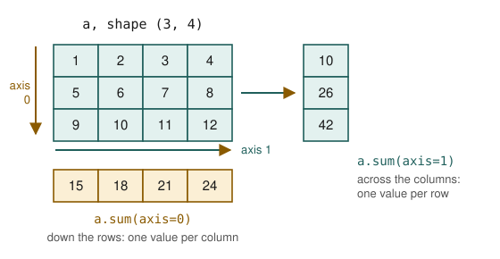
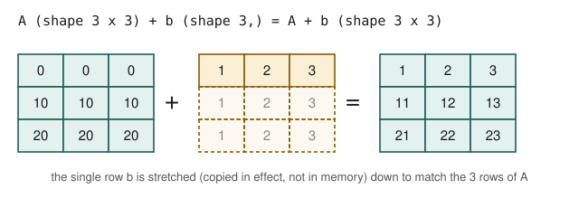

Chapter 3: Numerical Computing with NumPy¶
Arrays, vectorised arithmetic, broadcasting and random numbers
Learning outcomes
After this chapter you should be able to:
- explain why arrays are faster and more convenient than lists for numerical data;
- create arrays and describe them by
shape,ndim,sizeanddtype; - index and slice one- and two-dimensional arrays, and know when a slice is a view;
- select elements with boolean masks and integer index arrays;
- compute with whole arrays at once (vectorisation) and aggregate along an axis;
- predict the result of broadcasting two arrays of different shapes;
- generate reproducible random numbers with
np.random.default_rng; - handle missing values written as
np.nan.
NumPy (Numerical Python) is the foundation on which nearly all numerical work in Python is built. pandas stores its columns in NumPy arrays, matplotlib plots them, and scikit-learn takes them as input. Its central object, the ndarray (n-dimensional array), is a grid of numbers of a single type, stored compactly in memory, with mathematics that works on the whole grid at once. This chapter covers the parts of NumPy a data scientist uses daily.
By convention NumPy is imported under the short name np:
import numpy as np
print(np.__version__)
2.5.3
3.1 Why arrays?¶
A Python list can hold numbers, but it was designed to hold anything. Each element is a separate Python object somewhere in memory, and the list holds references to them. Arithmetic on a list has to be written as a loop, which Python executes one element at a time.
An array stores the numbers themselves, side by side, all of the same type. That has two consequences. First, operations can run in compiled code over the whole block of memory, which is typically tens to hundreds of times faster than a Python loop. Second, and more important for the person writing the code, arithmetic is written on the whole array at once:
prices = [12.5, 20.0, 8.0, 15.5]
qty = [3, 1, 5, 2]
# with lists: a loop (here a comprehension)
revenue_list = [p * q for p, q in zip(prices, qty)]
# with arrays: one expression
p = np.array(prices)
q = np.array(qty)
revenue = p * q
print(revenue_list)
print(revenue, revenue.sum())
[37.5, 20.0, 40.0, 31.0]
[37.5 20. 40. 31. ] 128.5
Writing operations on whole arrays instead of loops is called vectorisation. It is shorter, closer to the mathematics, and fast. A good rule for this chapter and the next: if you are writing a for loop over the elements of an array or a column, there is probably a vectorised way.
Caution: + means different things
For lists, + joins: [1, 2] + [3, 4] is [1, 2, 3, 4], and [1, 2] * 2 is [1, 2, 1, 2]. For arrays, + and * work element by element: np.array([1, 2]) + np.array([3, 4]) is array([4, 6]). Mixing up the two is a classic early mistake.
3.2 Creating arrays¶
Arrays are created from lists with np.array, or with functions that fill them in a pattern.
a = np.array([1, 2, 3, 4])
b = np.array([[1.0, 2.0, 3.0],
[4.0, 5.0, 6.0]])
print(a.shape, a.ndim, a.size, a.dtype)
print(b.shape, b.ndim, b.size, b.dtype)
(4,) 1 4 int64
(2, 3) 2 6 float64
The shape is a tuple giving the length along each dimension: (4,) for a one-dimensional array of four elements, (2, 3) for two rows and three columns. ndim is the number of dimensions and size the total number of elements. dtype is the type of every element: int64 (64-bit integers) or float64 (double-precision floats) are the usual ones.
print(np.zeros(3))
print(np.ones((2, 2)))
print(np.arange(0, 10, 2)) # like range: start, stop (excluded), step
print(np.linspace(0, 1, 5)) # 5 evenly spaced points, both ends included
print(np.full((2, 3), 7))
print(np.eye(3)) # identity matrix
[0. 0. 0.]
[[1. 1.]
[1. 1.]]
[0 2 4 6 8]
[0. 0.25 0.5 0.75 1. ]
[[7 7 7]
[7 7 7]]
[[1. 0. 0.]
[0. 1. 0.]
[0. 0. 1.]]
np.arange follows the rules of range and works best with integers; np.linspace asks for a number of points instead of a step, which avoids surprises with float steps, and is the usual choice for points along an axis when plotting.
Reshaping¶
reshape gives the same elements a new shape, as long as the total size matches. One dimension can be given as -1, meaning "whatever is needed".
x = np.arange(12)
m = x.reshape(3, 4)
print(m)
print(x.reshape(-1, 6).shape)
print(m.T) # transpose: rows become columns
print(m.ravel()[:5]) # flatten back to one dimension
[[ 0 1 2 3]
[ 4 5 6 7]
[ 8 9 10 11]]
(2, 6)
[[ 0 4 8]
[ 1 5 9]
[ 2 6 10]
[ 3 7 11]]
[0 1 2 3 4]
Types¶
Every element of an array has the same dtype. Mixing integers and floats makes floats; you can convert with astype.
print(np.array([1, 2, 3.5]).dtype)
heights_cm = np.array([150.2, 162.8, 171.5])
print(heights_cm.astype(int)) # truncates towards zero
print(np.round(heights_cm).astype(int))
float64
[150 162 171]
[150 163 172]
3.3 Indexing and slicing¶
One-dimensional arrays are indexed and sliced exactly like lists (Section 2.3). Two-dimensional arrays take one index or slice per dimension, separated by a comma: m[row, column].
m = np.arange(1, 13).reshape(3, 4)
print(m)
print(m[0, 2]) # row 0, column 2
print(m[1]) # the whole of row 1
print(m[:, 1]) # the whole of column 1
print(m[:2, 1:3]) # rows 0-1, columns 1-2
print(m[-1, -1]) # last row, last column
[[ 1 2 3 4]
[ 5 6 7 8]
[ 9 10 11 12]]
3
[5 6 7 8]
[ 2 6 10]
[[2 3]
[6 7]]
12
Slices are views¶
A slice of an array is a view: a window onto the same memory, not a copy. Changing the view changes the original.
row = m[0]
row[0] = 100
print(m[0])
safe = m[1].copy()
safe[0] = -1
print(m[1]) # unchanged
[100 2 3 4]
[5 6 7 8]
Views make slicing very cheap even on huge arrays, but they mean you must call .copy() when you want to modify a piece independently. (pandas, from version 3, behaves differently: changes to a selection never leak back into the original table. Chapter 4 says more.)
3.4 Boolean masks and fancy indexing¶
A comparison applied to an array gives an array of booleans, called a mask. Indexing with a mask keeps the elements where the mask is True. This is the array version of filtering, and it is used constantly.
temps = np.array([21.5, 23.0, 19.9, 25.1, 24.4, 22.7, 26.3])
hot = temps > 24
print(hot)
print(temps[hot])
print(hot.sum(), "hot days") # True counts as 1
print(hot.mean()) # the fraction of hot days
[False False False True True False True]
[25.1 24.4 26.3]
3 hot days
0.42857142857142855
Conditions combine with & (and), | (or) and ~ (not). The parentheses are required, because & and | bind more tightly than comparisons.
mild = (temps >= 21) & (temps <= 24)
print(temps[mild])
print(temps[~mild])
temps_clipped = np.where(temps > 25, 25, temps) # replace values above 25 by 25
print(temps_clipped)
[21.5 23. 22.7]
[19.9 25.1 24.4 26.3]
[21.5 23. 19.9 25. 24.4 22.7 25. ]
np.where(condition, a, b) builds a new array taking elements from a where the condition holds and from b elsewhere. It is the vectorised form of an if/else.
Caution: and and or do not work on arrays
(temps > 21) and (temps < 24) raises an error ("the truth value of an array with more than one element is ambiguous"), because Python's and needs a single True or False. Use &, | and ~ with arrays, and put each comparison in parentheses.
Fancy indexing uses an array (or list) of integer positions to pick elements in any order, with repeats allowed:
print(temps[[0, 2, 2, -1]])
order = np.argsort(temps) # the positions that would sort the array
print(order)
print(temps[order])
print(temps[order[-3:]]) # the three largest values
[21.5 19.9 19.9 26.3]
[2 0 5 1 4 3 6]
[19.9 21.5 22.7 23. 24.4 25.1 26.3]
[24.4 25.1 26.3]
3.5 Vectorised arithmetic and universal functions¶
Arithmetic operators work element by element, and so do NumPy's universal functions (ufuncs): np.sqrt, np.exp, np.log, np.abs, np.round, and many more.
x = np.array([1.0, 4.0, 9.0, 16.0])
print(x + 1, x * 2, x ** 2)
print(np.sqrt(x))
print(np.log10(x).round(3))
print(np.exp(np.array([0, 1])).round(4))
[ 2. 5. 10. 17.] [ 2. 8. 18. 32.] [ 1. 16. 81. 256.]
[1. 2. 3. 4.]
[0. 0.602 0.954 1.204]
[1. 2.7183]
Combining these gives whole formulas in one line. For example, converting a series of prices into percentage changes from one day to the next:
price = np.array([100.0, 102.0, 99.0, 105.0, 104.0])
pct_change = (price[1:] - price[:-1]) / price[:-1] * 100
print(pct_change.round(2))
print(np.diff(price)) # the same differences, built in
[ 2. -2.94 6.06 -0.95]
[ 2. -3. 6. -1.]
price[1:] is every price but the first and price[:-1] every price but the last; subtracting the two arrays element by element gives each day's change.
3.6 Aggregation and axes¶
Aggregations reduce many values to one: sum, mean, std, min, max, argmin, argmax, median, percentile. They exist both as functions (np.mean(a)) and as methods (a.mean()).
marks = np.array([62, 75, 58, 91, 75, 68])
print(marks.sum(), marks.mean(), np.median(marks))
print(marks.min(), marks.max(), marks.argmax())
print(marks.std().round(3), marks.std(ddof=1).round(3))
print(np.percentile(marks, [25, 50, 75]))
429 71.5 71.5
58 91 3
10.72 11.743
[63.5 71.5 75. ]
std() computes the standard deviation dividing by \(n\); std(ddof=1) divides by \(n - 1\), which is the usual estimate from a sample (Chapter 7 explains why). pandas uses \(n - 1\) by default and NumPy uses \(n\), so the two libraries give slightly different answers for the same numbers unless you say which you want.
For a two-dimensional array, an aggregation can work over everything or along one axis. Figure 3.1 shows the rule: axis=0 runs down the rows and leaves one result per column; axis=1 runs across the columns and leaves one result per row.

a = np.arange(1, 13).reshape(3, 4)
print(a.sum())
print(a.sum(axis=0))
print(a.sum(axis=1))
print(a.mean(axis=0))
78
[15 18 21 24]
[10 26 42]
[5. 6. 7. 8.]
Key idea
The axis you name is the one that disappears. An array of shape (3, 4) summed over axis=0 has shape (4,); summed over axis=1 it has shape (3,). When data is stored with one row per observation and one column per variable, axis=0 gives a summary per variable, which is what you usually want.
3.7 Broadcasting¶
What happens when two arrays of different shapes meet in an operation? Adding a single number to an array adds it to every element: the number is "stretched" to the shape of the array. Broadcasting generalises this to arrays.
The rule: compare the shapes from the right. Two dimensions are compatible when they are equal or one of them is 1 (a missing dimension on the left counts as 1). A dimension of length 1 is stretched to match the other. If any pair is incompatible, NumPy raises an error.

A = np.array([[0, 0, 0], [10, 10, 10], [20, 20, 20]])
b = np.array([1, 2, 3])
print(A + b) # shapes (3, 3) and (3,): b is added to every row
col = np.array([[100], [200], [300]]) # shape (3, 1)
print(A + col) # col is added to every column
[[ 1 2 3]
[11 12 13]
[21 22 23]]
[[100 100 100]
[210 210 210]
[320 320 320]]
The most common use in data work is to standardise each column of a data table: subtract the column's mean and divide by its standard deviation, so that every variable has mean 0 and standard deviation 1. With broadcasting it is one line.
data = np.array([[150.0, 50.0],
[160.0, 58.0],
[170.0, 65.0],
[180.0, 80.0]]) # height (cm), weight (kg)
mu = data.mean(axis=0) # shape (2,)
sigma = data.std(axis=0) # shape (2,)
z = (data - mu) / sigma # (4, 2) with (2,): broadcast down the rows
print(mu, sigma.round(3))
print(z.round(3))
print(z.mean(axis=0).round(10), z.std(axis=0))
[165. 63.25] [11.18 11.031]
[[-1.342 -1.201]
[-0.447 -0.476]
[ 0.447 0.159]
[ 1.342 1.518]]
[0. 0.] [1. 1.]
The round(10) hides rounding errors of the size of \(10^{-16}\); the means are zero up to floating-point precision. (A printed value of -0. would mean a tiny negative number rounded to zero.)
Example 3.1: Will these shapes broadcast?
Compare from the right; each pair must be equal or contain a 1.
(4, 3)with(3,): 3 and 3 match; the missing dimension counts as 1. Result(4, 3).(4, 3)with(4,): 3 and 4 do not match and neither is 1. Error. To add one number per row, reshape the second array to(4, 1).(4, 1)with(1, 5): 1 and 5 give 5; 4 and 1 give 4. Result(4, 5), an "outer" combination of the two.
r = np.arange(4).reshape(4, 1)
c = np.arange(5).reshape(1, 5)
print((r * 10 + c).shape)
print(r * 10 + c)
(4, 5)
[[ 0 1 2 3 4]
[10 11 12 13 14]
[20 21 22 23 24]
[30 31 32 33 34]]
3.8 Random numbers¶
Simulation, sampling, shuffling data before splitting it, and initialising models all need random numbers. NumPy's modern interface is a generator object created with np.random.default_rng, given a seed so that the results can be reproduced.
rng = np.random.default_rng(seed=42)
print(rng.integers(1, 7, size=10)) # dice: 1 to 6 (7 excluded)
print(rng.random(3).round(3)) # uniform on [0, 1)
print(rng.normal(loc=170, scale=8, size=4).round(1)) # bell-shaped heights
print(rng.choice(["H", "T"], size=8)) # coin tosses
print(rng.permutation(6)) # a random order of 0..5
[1 5 4 3 3 6 1 5 2 1]
[0.976 0.761 0.786]
[169.9 163.2 177. 176.2]
['T' 'T' 'H' 'T' 'T' 'H' 'H' 'H']
[1 0 5 4 3 2]
Run the cell again with the same seed and the same numbers appear; change the seed and they change. Every simulation in this book uses a seeded generator, so your outputs should match the ones printed.
Note: the older interface
Much existing code calls functions such as np.random.seed(0) and np.random.rand(3). That interface still works, but it uses one hidden global state shared by all code in the program. The generator interface keeps the state in an object you control, and is what NumPy's documentation recommends for new code.
A quick simulation shows the power of vectorised random numbers. What fraction of the time do two dice add up to 7? Theory says \(6/36 = 1/6 \approx 0.167\).
rng = np.random.default_rng(7)
rolls = rng.integers(1, 7, size=(100_000, 2)) # 100,000 throws of two dice
totals = rolls.sum(axis=1)
print((totals == 7).mean())
print(np.bincount(totals)[2:]) # how often each total 2..12 came up
0.16663
[ 2870 5457 8187 11046 13949 16663 13906 11266 8350 5535 2771]
The simulated fraction is close to \(1/6\), and the counts rise from total 2 to a peak at 7 and fall to 12, as the 36 equally likely pairs predict.
3.9 Missing values and nan¶
NumPy represents a missing or undefined float as np.nan ("not a number"). It spreads through arithmetic: any calculation involving nan gives nan. The nan-aware functions skip it.
readings = np.array([21.5, np.nan, 19.9, 25.1, np.nan])
print(readings.mean()) # nan spreads
print(np.nanmean(readings), np.nanmax(readings))
print(np.isnan(readings))
print(readings[~np.isnan(readings)]) # keep the real values
print(np.nan == np.nan) # nan is not equal even to itself
nan
22.166666666666668 25.1
[False True False False True]
[21.5 19.9 25.1]
False
The last line is a trap: nan is not equal to anything, including itself, so x == np.nan is always False. Test with np.isnan. Integer arrays cannot hold nan at all; an integer array with a missing value must become a float array (or, in pandas, use a nullable type, Chapter 5).
3.10 A little linear algebra¶
Many models in Chapters 8 to 11 are written in terms of vectors and matrices. Two operations are enough for now. The dot product of two vectors multiplies them element by element and adds the results; matrix multiplication, written @, takes dot products of the rows of the first matrix with the columns of the second.
w = np.array([0.5, 2.0, -1.0]) # weights
x = np.array([4.0, 1.0, 3.0]) # one observation's features
print(w @ x) # 0.5*4 + 2*1 - 1*3
X = np.array([[4.0, 1.0, 3.0],
[2.0, 0.0, 1.0]]) # two observations
print(X @ w) # one prediction per row
1.0
[1. 0.]
X @ w computes a weighted sum of the features for every row at once: exactly the prediction of a linear model (Chapter 8). NumPy can also solve systems of linear equations. For example, \(2a + b = 5\) and \(a - b = 1\):
M = np.array([[2.0, 1.0], [1.0, -1.0]])
rhs = np.array([5.0, 1.0])
print(np.linalg.solve(M, rhs))
[2. 1.]
The solution is \(a = 2\), \(b = 1\), as substitution confirms: \(2 \cdot 2 + 1 = 5\) and \(2 - 1 = 1\).
3.11 Worked example: a week of sensor readings¶
Four temperature sensors in a cold store record one reading per day for a week. One sensor is suspected of drifting. We simulate the data, then analyse it with the tools of this chapter.
rng = np.random.default_rng(2024)
days, sensors = 7, 4
readings = rng.normal(loc=4.0, scale=0.3, size=(days, sensors))
readings[:, 2] += np.linspace(0, 2.0, days) # sensor 2 drifts upwards
readings[3, 1] = np.nan # sensor 1 missed day 3
print(readings.round(2))
[[4.31 4.49 4.34 3.71]
[3.58 4.02 4.59 4.15]
[4.54 4.23 4.86 3.78]
[3.67 nan 5.01 4.24]
[3.59 3.87 4.95 3.77]
[4.27 3.56 5.51 4.05]
[3.8 3.92 5.93 4.13]]
Each row is a day and each column a sensor. The per-sensor mean and the per-day spread answer different questions, so they use different axes.
sensor_mean = np.nanmean(readings, axis=0)
print("mean per sensor:", sensor_mean.round(2))
print("sensor with highest mean:", np.nanargmax(sensor_mean))
day_range = np.nanmax(readings, axis=1) - np.nanmin(readings, axis=1)
print("spread per day: ", day_range.round(2))
too_warm = readings > 5.0 # nan > 5 is False
print("readings above 5 degrees:", too_warm.sum())
print("(day, sensor) pairs:", np.argwhere(too_warm).tolist())
mean per sensor: [3.97 4.01 5.03 3.98]
sensor with highest mean: 2
spread per day: [0.78 1.01 1.08 1.35 1.36 1.95 2.13]
readings above 5 degrees: 3
(day, sensor) pairs: [[3, 2], [5, 2], [6, 2]]
The drifting sensor stands out three ways: its mean is the highest, the daily spread between sensors grows through the week, and the readings above 5 degrees come from it alone, on the later days. A real analysis would now check the sensor before trusting its readings, which is a decision about the data, not something NumPy can make for you.
3.12 Summary¶
Summary
- A NumPy array is a grid of values of one dtype, described by
shape,ndim,sizeanddtype. - Create arrays with
np.array,zeros,ones,arange,linspace; change shape withreshapeand.T. - Index with one position or slice per dimension,
m[row, col]. Slices are views:.copy()before modifying independently. - Boolean masks filter (
a[a > 0]); combine conditions with&,|,~in parentheses;np.whereis a vectorised if/else. - Arithmetic and ufuncs work element by element: write whole-array expressions instead of loops.
- Aggregations reduce; the axis named is the one that disappears (
axis=0gives one value per column). - Broadcasting stretches dimensions of length 1, comparing shapes from the right.
- Use
rng = np.random.default_rng(seed)for reproducible random numbers. np.nanmarks missing floats; it spreads through arithmetic, so usenp.isnanand thenanfunctions.
3.13 Exercises¶
Exercise 1
What are the shape and the contents of np.arange(6).reshape(2, 3).sum(axis=0)?
Answer
The array is [[0, 1, 2], [3, 4, 5]]. Summing over axis 0 adds the two rows, giving shape (3,) and contents [3, 5, 7].
Exercise 2
Given x = np.array([3, -1, 4, -1, 5, -9, 2]), write one expression for each: (a) the negative values; (b) the number of positive values; (c) a copy of x with negative values replaced by 0.
Answer
x = np.array([3, -1, 4, -1, 5, -9, 2])
print(x[x < 0])
print((x > 0).sum())
print(np.where(x < 0, 0, x))
[-1 -1 -9]
4
[3 0 4 0 5 0 2]
Exercise 3
Will arrays of shapes (5, 1) and (3,) broadcast? If so, what is the shape of the result?
Answer
Yes. From the right: 1 and 3 give 3; 5 and the missing dimension (treated as 1) give 5. The result has shape (5, 3).
Exercise 4
Using a seeded generator, simulate 10,000 tosses of a fair coin and report the fraction of heads. Then simulate 10,000 runs of 10 tosses each and report the fraction of runs with 8 or more heads.
Answer
rng = np.random.default_rng(1)
tosses = rng.integers(0, 2, size=10_000) # 1 = heads
print(tosses.mean())
runs = rng.integers(0, 2, size=(10_000, 10)).sum(axis=1)
print((runs >= 8).mean())
0.5003
0.0588
The first number is close to 0.5. The exact probability of 8 or more heads in 10 tosses is \((45 + 10 + 1)/1024 = 56/1024 \approx 0.055\), and the simulated fraction is close to it.
Exercise 5
Explain why np.array([1, 2, np.nan]).mean() is nan, and give two ways to get the mean of the non-missing values.
Answer
Any arithmetic involving nan gives nan, and the mean adds all the values. Either use np.nanmean(a), or filter first: a[~np.isnan(a)].mean(). Both give 1.5.
Exercise 6
A matrix scores has one row per student and one column per subject. Write expressions for (a) each student's average and (b) the best student in each subject (as a row index).
Answer
(a) scores.mean(axis=1) (across the subjects, one value per student). (b) scores.argmax(axis=0) (down the students, one index per subject).
Exercise 7
Why does changing s in s = a[2:5]; s[0] = 99 change a, and how do you avoid it?
Answer
An array slice is a view onto the same memory as a, so writing through s writes into a. Use s = a[2:5].copy() to get independent data.
3.14 Quiz¶
Check your understanding of Chapter 3
Exercise 1
What is the shape of np.zeros((4, 3)).sum(axis=1)?
Answer
(4,) / 4
Exercise 2
Which operator combines two boolean masks with "and"?
- and
- &&
- &
- +
Answer
&
Exercise 3
What does np.array([1, 2]) * 2 give?
- array([1, 2, 1, 2])
- array([2, 4])
- an error
- array([1, 4])
Answer
array([2, 4])
Exercise 4
Which pair of shapes cannot be broadcast together?
- (4, 3) and (3,)
- (4, 1) and (1, 5)
- (4, 3) and (4,)
- (2, 3) and (1, 3)
Answer
(4, 3) and (4,)
Exercise 5
How should you test whether the elements of an array x are missing?
- x == np.nan
- x is np.nan
- np.isnan(x)
- x == None
Answer
np.isnan(x)
Exercise 6
A slice of a NumPy array is
- always a copy
- a view of the same data
- a list
- a new dtype
Answer
a view of the same data
Exercise 7
Which line creates a reproducible random generator?
- np.random.default_rng(42)
- np.random.rand(42)
- np.random()
- random.seed()
Answer
np.random.default_rng(42)